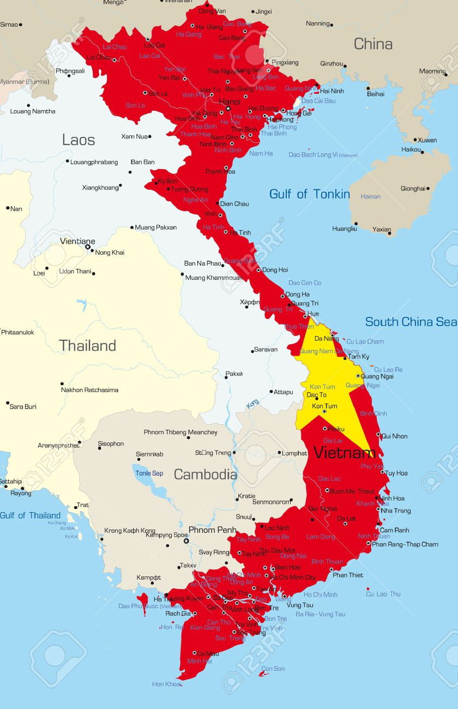

Khanh Trinh's Web120 Portal
Welcome
My first time traveling from Vietnam to United State was more than 10 years ago.
I have a Chihuahua that is about 70 years old in human year
My hobby is reading light novel. I can go days reading novel without eating. I have always use Android and Microsoft product through out my life, therefore I know more about Android than Apple.
The type of web development is mostly for programmer. I want to make an interface that allow people to easily look at and nagivate to